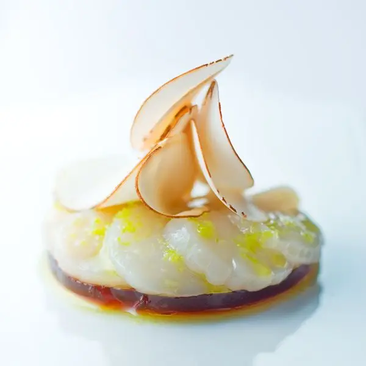

Todas las recetas
Snacks
Entrantes
Platos
Postres
Otros
J.R. FARIN
Chef & recipes & more
Pescados
Navajas Rockefeller
Entrantes
Canalones de Cangrejo Real con Coulis de Erizos de mar
Entrantes
Bûche de Salmón ahumado, relleno de mousse de Salmón fresco y caviar
Entrantes
Sobre migas prensadas, tortilla de fria de patatas, sopa de melon y manzana
Entrantes
Espuma de tortilla francesa

Pescados
Carpaccio de vieiras, gelé de cebollas tostadas y aceite de limón
Entrantes
"Irish Coffee" consomé de rabo de buey y espuma de parmesano
Snacks
"Teja crujiente de patatas violeta
Entrantes
"Terrina de foie, confitura de ruibarbo, gel de estragón